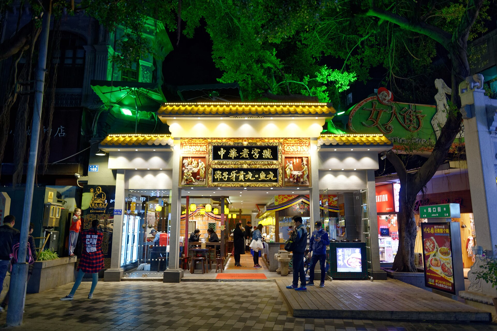
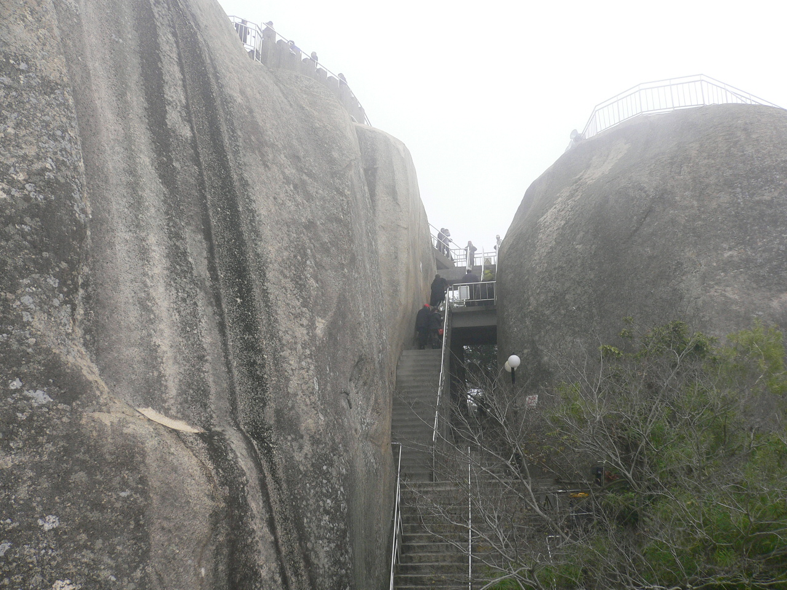
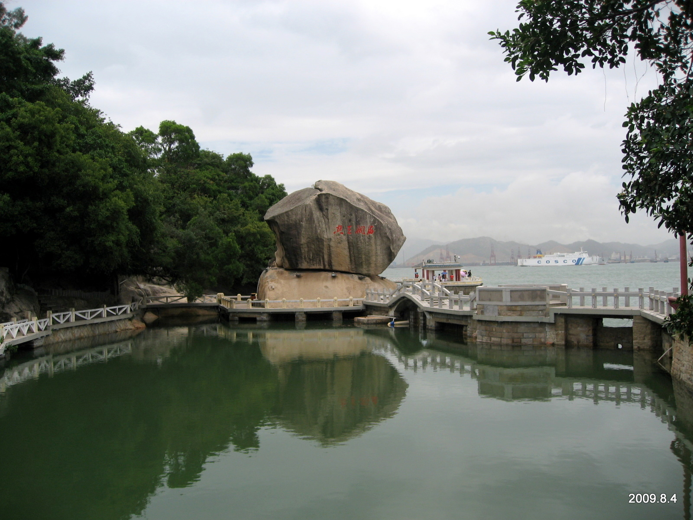
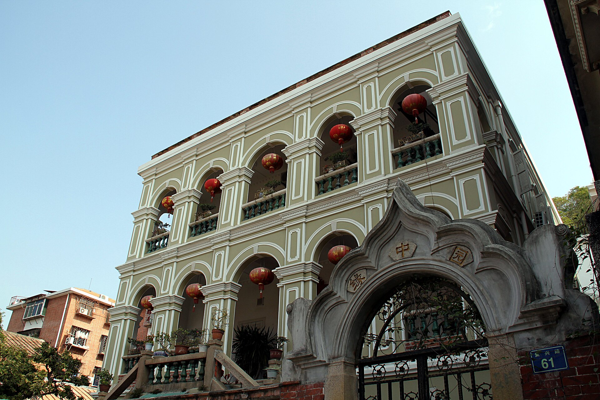
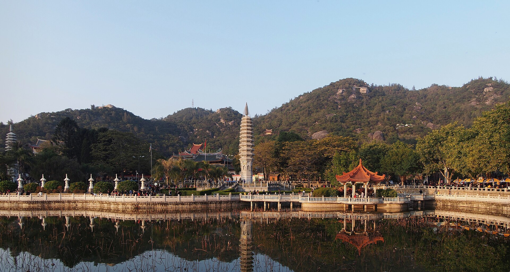
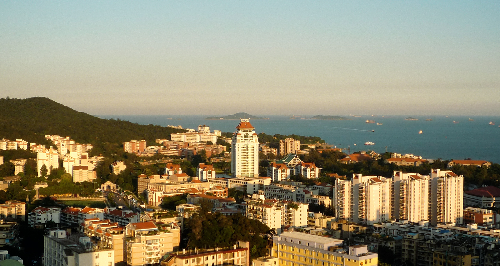
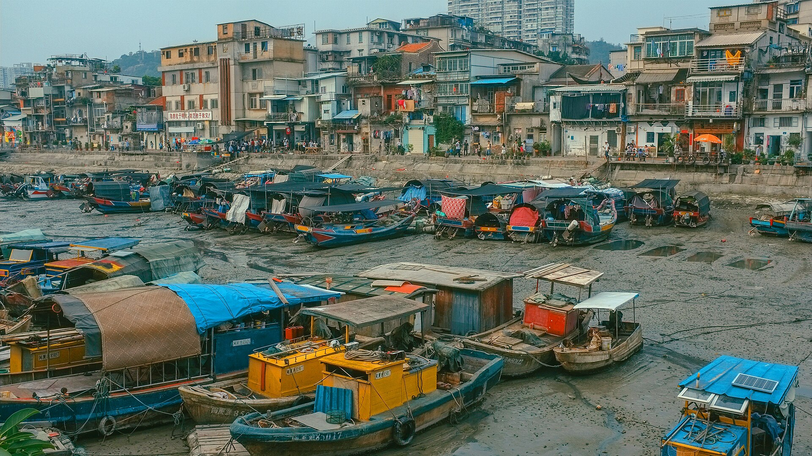
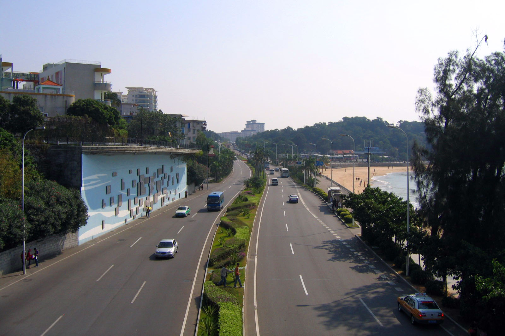
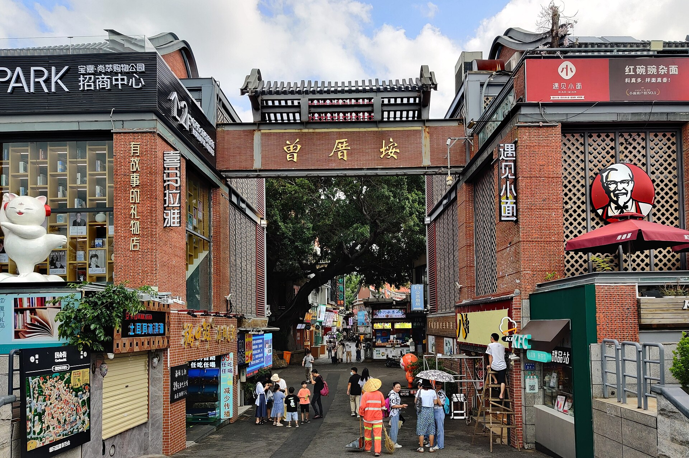
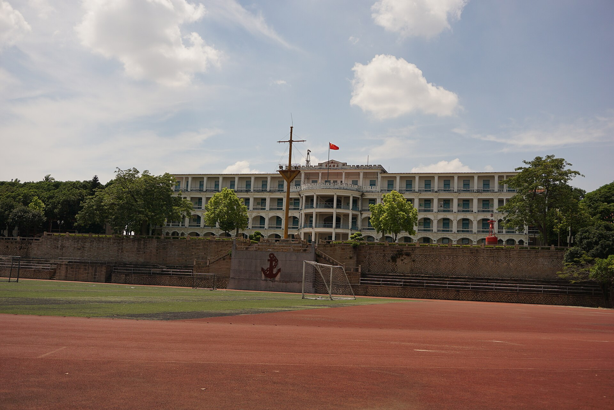

行程速览
三天一条岛—海—市的动线：第一天上岛读建筑，第二天沿海边骑行，第三天钻进菜市场与嘉庚校园。全程靠轮渡、地铁与一辆共享单车，轻松走完。
Day 1 · 上岛，走进万国建筑
关键词：轮渡、日光岩、钢琴声、老别墅。第一天以"顺利上岛"为主，把整座世遗小岛泡进一个下午。
怎么去厦门（上海出发）
上海虹桥 → 厦门北 / 厦门站，全程约 4.5–6 小时，二等座约 450–600 元（以 12306 为准）。白班车下午即达，晚上正好逛中山路；车票不算紧张，日期待定也从容。厦门北站离市区远，务必预留地铁 1 小时。
上海浦东/虹桥 → 厦门高崎机场约 2 小时，票价随季节波动大，提前 2–3 周盯票。机场地铁 1 号线直达镇海路（中山路），全程约 40 分钟——想省时间选飞机。
游客白天乘轮渡须从东渡邮轮中心厦鼓码头出发（35 元往返，"厦门轮渡"公众号购票），夜间班次才从轮渡码头走；岛上步行即可，全程无机动车。

从八市到日光岩的登高




Day 2 · 从古刹到海岸线
关键词：南普陀的香火、厦大的芙蓉湖、环岛路的椰风。第二天在本岛东南角，把文化与海岸线连成一条线。
千年古刹、最美校园与一场骑行





Day 3 · 早市烟火与嘉庚红楼
关键词：八市的鲜、集美的红楼、跨海地铁。最后一天把市井与学村一起收进行程，午后从容返程。
从菜市场到学村的红屋顶

住在哪里
两个思路：住中山路—沙坡尾一带守着本岛的烟火与海岸；或宿鼓浪屿，在游客散去后独享一座世遗小岛。价格为常规参考区间，以预订平台实时价为准。
中山路商圈酒店
地铁 1 号线起点，去轮渡码头、八市、厦大都在三站内。夜逛中山路与早餐八市都是楼下的事，交通性价比最高。
沙坡尾设计民宿
住在老渔港边的 loft 民宿里，楼下就是咖啡馆与大排档，傍晚沿着避风坞散步，是文艺旅行者的首选。
环岛路海景民宿
推开窗就是海与木栈道，晚上逛渔村夜市步行即达，第二天清晨还能去海边看日出——适合把"海边"住进每一刻。
老别墅改造民宿
傍晚的轮渡一开，游客散尽，整座小岛就是住客的：清晨在鸟鸣里吃早餐，巷子里只有猫。行李轻的强烈推荐体验一晚。
厦门味道
闽南的味道底色是海鲜 + 沙茶 + 甜汤：一碗沙茶面、一份海蛎煎、一杯四果汤——咸甜之间的平衡，就是厦门的味觉密码。
厦门人管清蒸白灼叫"酱油水"——渔港边最朴素的鲜。坞边大排档按筐点鱼，现捞现做（真实照片 · 沙坡尾）。
沙茶面乌糖 · 月华
沙茶汤底配碱水面的国民早餐，加料自选：猪肝、豆腐、大肠、虾仁——每家老店的汤底配方都是秘密。
海蛎煎闽南经典
现开海蛎裹地瓜粉煎到边脆，蘸甜辣酱——鼓浪屿与八市都有好手，趁热吃。
土笋冻勇敢者冷盘
海边沙虫熬出的胶质冻，Q 弹清爽配芥末酱油——听着吓人，吃着上头，来厦门总要试一次。
姜母鸭大排档砂锅
老姜与鸭肉在砂锅里炭火慢煨，焦香扑鼻——集美大社与本岛老店都值得专程一顿。
面线糊八市早餐
细面线熬成糊，加醋肉、大肠、油条泡着吃，是厦门人清晨的仪式感。
花生汤黄则和
花生炖到一抿就化，甜而不腻，加个鸡蛋更滑——中山路百年老铺，配油条是标准吃法。
烧肉粽1980 烧肉粽
咸蛋黄、三层肉、香菇板栗裹进糯米，淋沙茶甜辣酱——闽南粽子的豪华版本。
四果汤曾厝垵
仙草、芋圆、绿豆、石花膏任选四样浇蜜水——逛完夜市的解暑标配。
炸五香闽南小吃
豆皮卷肉馅下锅炸，外酥里嫩蘸甜辣酱——酒席与小吃摊通吃的"硬通货"。
鱼丸汤鼓浪屿
林记鱼丸的鲨鱼丸包肉馅，一咬爆汁，配清汤撒胡椒——上岛标配。
凤梨酥 · 馅饼伴手礼
鼓浪屿馅饼（绿豆馅）与南普陀素饼是两大地标手信，认准老字号门店。
海鲜大排档先问价
八市买好加工、或沙坡尾直接点，选明码标价的店；贝壳类按斤算，先确认时价再下单。
海鲜加工与老字号扎堆，第一天午餐与第三天早餐都留在这。
骑楼下的美食街巷，花生汤与烧肉粽老铺都在，配合夜逛。
咖啡馆与酱油水大排档混搭，午餐首选，饭后逛艺术西区。
小吃密度之王，四果汤、炸串、海鲜烧烤，夜市模式全开。
实用贴士
日期待定的海岛旅行，功课重点在船票、预约和台风季这三件事：
船票是第一优先级
上鼓浪屿的游客轮渡票需提前在"厦门轮渡"公众号实名购票（白天从邮轮中心码头出发），节假日船票比机票还紧俏——定下日期第一件事买船票。
厦大要预约
厦门大学参观通过"U厦大"小程序实名预约，名额有限、节假日秒光；没约上也别遗憾，芙蓉隧道外的大学路与南普陀后山同样精彩。
台风季与天气
7–9 月为台风季，出发前一周盯紧气象预警，台风前后船班停航；防晒是全年任务（帽子、防晒霜、墨镜三件套），夏季午后尽量安排室内。
市内交通
地铁 1/2/3 号线 + 公交覆盖全城，支付宝乘车码通用；网约车便宜且不打表争议少；本岛到集美务必体验 1 号线跨海段（海上列车）。
吃海鲜避坑
先问价再下单，选明码标价的排档；八市加工认准"加工费按做法计价"的明码店；景区门口的"海鲜大排档拉客"一律不理。
节奏建议
鼓浪屿一整天、环岛路一整天，第三天留在本岛与集美最从容；看日落推荐演武大桥观景平台与环岛路音乐广场段；返程预留厦门北站地铁 1 小时。